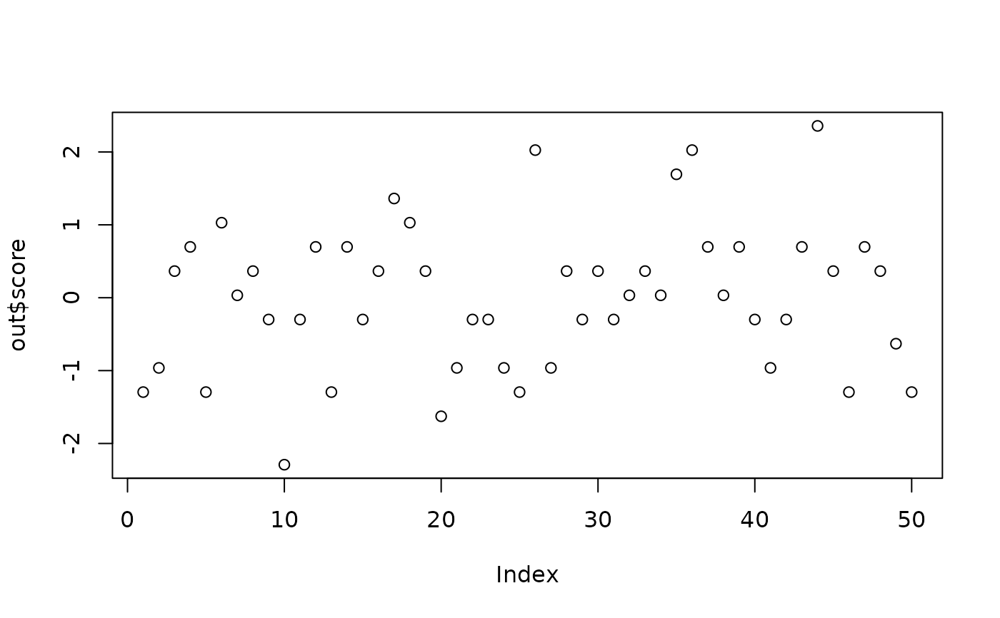

Score a published polygenic-score panel on a dosage matrix
Source:R/instruments_exposure.R
score_pgs_panel.RdApplies a published set of per-variant weights (e.g. a PGS Catalog
scoring file, which is already LD-aware) directly to a genotype
dosage matrix. Matching is by chr:pos:ref:alt key (with automatic
allele-flip handling: when the genotype stores the opposite
orientation, the weight is negated) or by rsID when present.
Arguments
- weights
A data.frame of variant weights. Recognized columns:
chr/chr_name,pos/chr_position,a1/effect_allele,a0/other_allele,weight/effect_weight, and optionallyrsid. PGS Catalog scoring files can be read directly withutils::read.delim()(skip the header comment lines).- genotypes
A numeric dosage matrix (variants x samples, dosages in 0-2) whose rownames are either
chr:pos:ref:altkeys or rsIDs matchingweights. Abigsnpr::snp_attach()bigSNPobject is also accepted (requires bigsnpr).- impute_mean
Logical: mean-impute missing dosages per variant. Default
TRUE.- scale_score
Logical: scale the resulting score to mean 0 / sd 1. Default
TRUE.
Value
A list with:
- score
named numeric vector of per-sample scores.
- matched
data.frame of matched variants with the weights used (after any flip correction).
- n_input
number of weight-panel variants.
Examples
# Toy dosage matrix: 4 variants x 50 samples
dos <- matrix(rbinom(4 * 50, 2, 0.3), nrow = 4,
dimnames = list(c("1:100:A:G", "1:200:C:T",
"1:300:G:A", "2:400:T:C"),
paste0("S", 1:50)))
wts <- data.frame(chr = c(1, 1, 2), pos = c(100, 300, 400),
a1 = c("A", "G", "T"), a0 = c("G", "A", "C"),
weight = c(0.1, -0.2, 0.05))
out <- score_pgs_panel(wts, dos)
plot(out$score)
